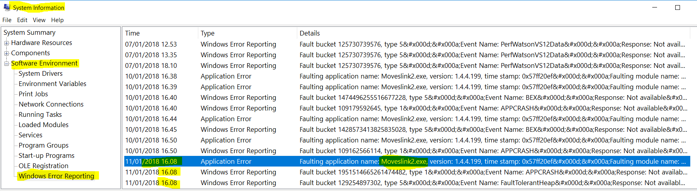
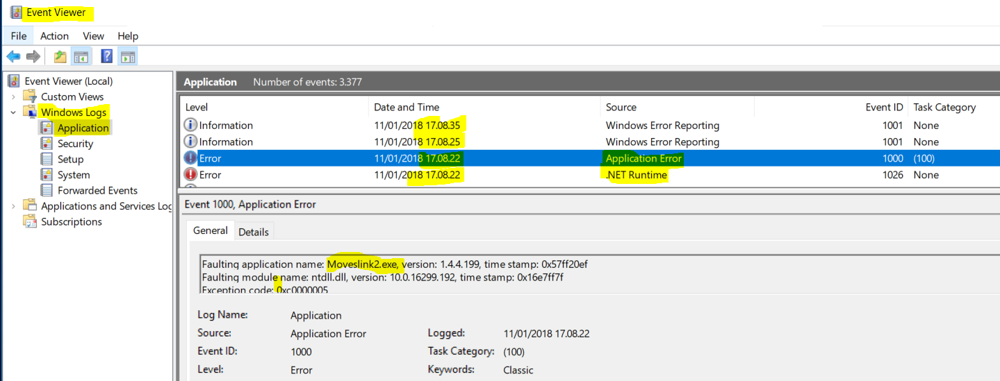
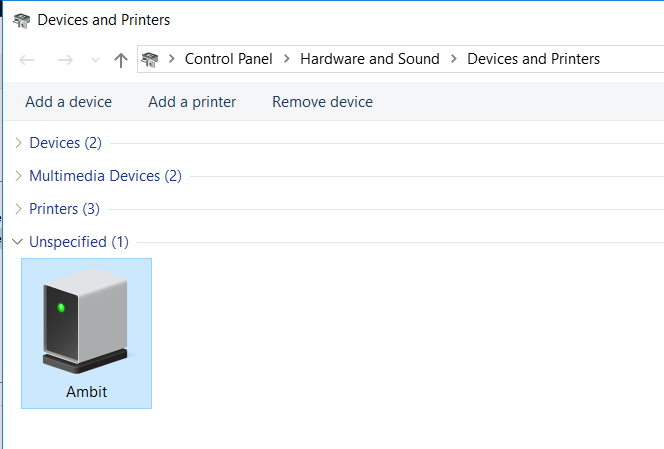
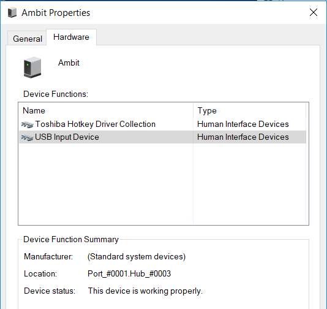
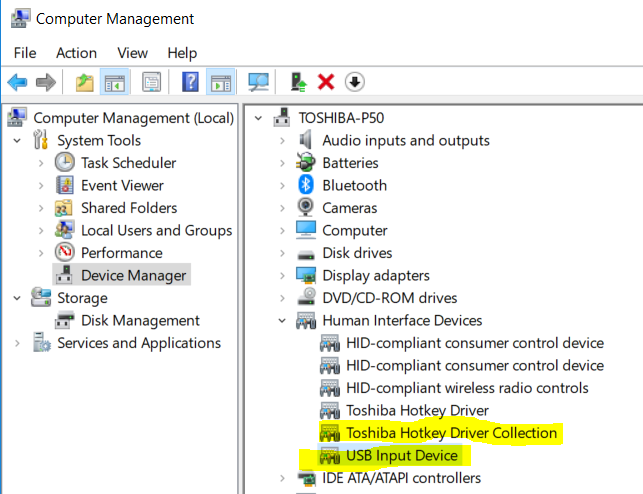

Moveslink 2 crash
Posted on January 11, 2018 in DevOp
A few day ago I resat my Windows 10, so I could start from scratch.
The USB driver for my GPS watch, Suunto Ambit 2 misbehaved.
I just connected the watch with USB cable.
Then I installed Moveslink2.
I would see Moveslink in the taskbar and the taskmanager for a while and then it would disappear.
I thought it was a problem that I had the watch connected while I installed Moveslink, but no.
It turned out that it is a known error which appears with Windows 10 Fall Creators Update (1709).
The problem causes moveslink2 to crash.
What I had to do to make it disappear was:
- Turn off Wifi
- Reconnect watch with USB wire
=> Now moveslink would show - Turn on Wifi
- Sign in to movescount.com
All back to normal - Me happy
In System Information I could see

In Event Viewer I could see

In Devices and Printers I could see Ambit

Ambit has two drivers

In Devices Manager I could not see Ambit, but now I knew which drivers it used

My related articles
The End